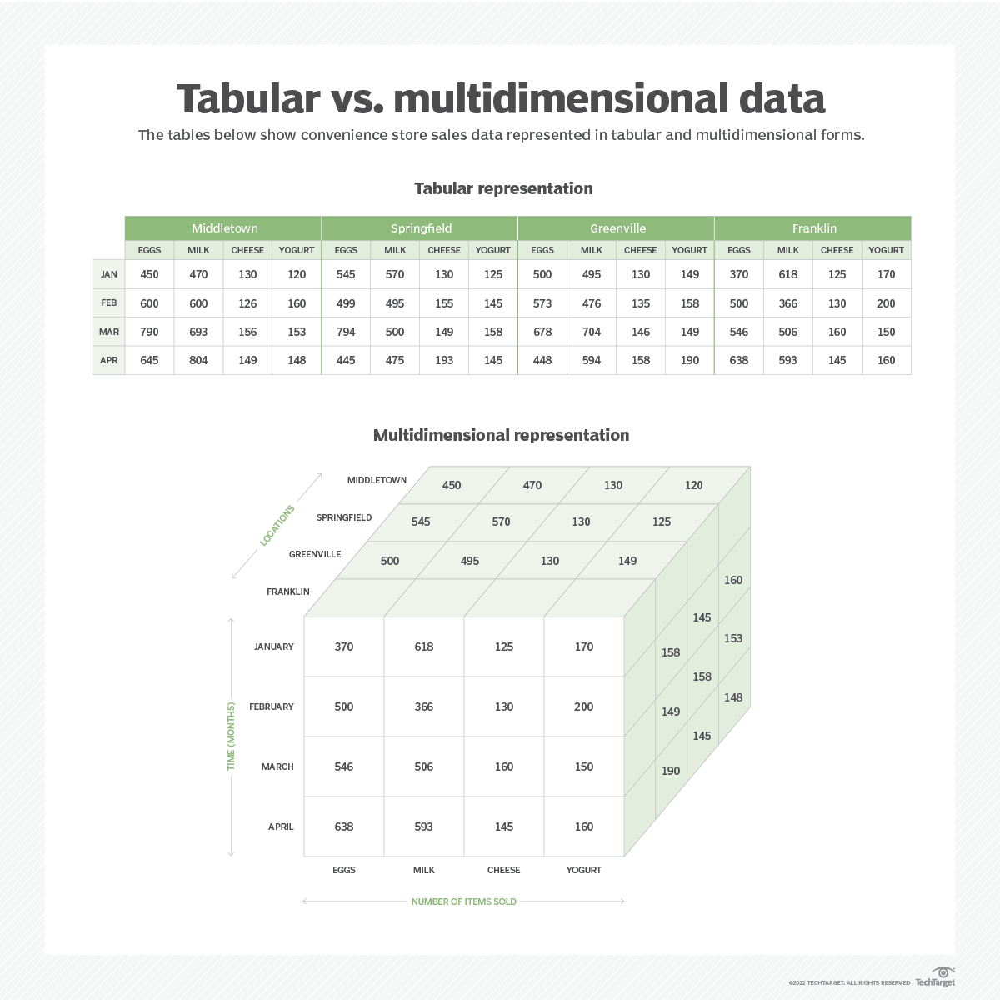

# 基本概念
多维数据库 (multidimensional databases, MDB) 是一种用于处理复杂数据的数据库系统，其主要特点是可以快速而方便地处理大量多维数据。传统的关系型数据库 (如 MySQL、Oracle 等) 只能存储二维表格形式的数据，而多维数据库可以存储和处理任意维度的数据。多维数据库通常用于业务智能和数据分析应用程序中，因为这些应用程序需要对大量复杂的数据进行多维度的查询、分析和报告。下图是一个多维数据库与对应的关系数据库的例子。

# 优劣
与传统关系型数据库相比，多维数据库有一些显著的优点：
- 易于维护
- 数据的相似分组
- 易于进行切片
- 性能更佳
- 更好的数据观察视角
但其缺点也相当显著：
- 复杂性高
- 性能问题：如果没有做到高效 cache, 那么高效性能难以保证